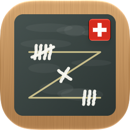

Die Jasstafel für den Tisch: Schieber, Coiffeur und Differenzler, mit dem Kugelschreiber aufs Z geschrieben. Auf dem iPad liegt sie in der Tischmitte, für beide Seiten.
Gratis, ohne Werbung, ohne Konto, ohne Tracking. Jasstafel schreibt, ihr spielt mit echten Karten. Ansage wählen, Punkte eintippen, «Schreiben»: Der Rest auf 157 rechnet sich, und der blaue Kugelschreiber zieht die Striche aufs Z wie auf dem Jassblock in der Gaststube. Auf Deutsch, Französisch und Italienisch, für iPhone und iPad.
Wie schreibe ich ein Spiel? «Schreiben» antippen, die Ansage wählen, die Punkte eines Teams eintippen und mit dem Häkchen bestätigen. Der Rest auf 157 geht ans andere Team. Für einen Match den Knopf «Match» antippen. Weis und Stöck schreibt ihr im selben Blatt oder sofort mit dem Knopf neben «Schreiben».
Falsch geschrieben? «Rückgängig» antippen, oder oben rechts den Verlauf öffnen und das Spiel korrigieren. Die Partie rechnet danach neu, auch Berg, Schneider und Striche.
Bei uns zählt man anders. In den Tischregeln (oben rechts) stellt ihr Ziel, Faktoren je Ansage, Berg, Schneider und die Karten ein. Was am Tisch abgemacht ist, gilt; die App sagt nie, eine Regel sei falsch.
Wann darf man sich bedanken? Sobald ein Team das Ziel erreicht, erscheint «Bedanken». Die App folgt der Ausmachregel Stöck, Weis, Stich: Wer so zuerst am Ziel ist, gewinnt. Ist es bei beiden mit dem Stich desselben Spiels, fragt die App.
Das iPad in der Tischmitte: flach hinlegen; jede Hälfte gehört einem Team und hat ihr eigenes «Schreiben». Wer lieber alles auf einer Seite sieht, wählt in den Tischregeln «Alle auf einer Seite».
Differenzler verdeckt: Das Gerät geht reihum. Wer dran ist, tippt «Ich bin …» und die Ansage; sie bleibt verdeckt (gedrückt halten zum Ansehen) und wird nach dem Spiel aufgedeckt.
Spielt die App mit? Nein. Gespielt wird mit echten Karten, die App rechnet und schreibt nur. Es geht um kein Geld und um keine Wetten.
Wo sind meine Partien? Nur auf diesem Gerät, ohne Konto. Löscht ihr die App, sind auch die Partien weg.
Ein Fehler, oder sagt man es bei euch anders? Schreibt an apps@ceccato.ch. Besonders willkommen sind Hinweise aus der Romandie und dem Tessin zu den Wörtern auf Französisch und Italienisch.
Bald im App Store als «Jasstafel: Schieber & Coiffeur» · Datenschutz
Gratuite, sans publicité, sans compte, sans suivi. Jasstafel marque, vous jouez avec de vraies cartes. Choisir l’atout, taper les points, « Marquer » : le reste jusqu’à 157 se calcule tout seul et le stylo à bille bleu trace les traits sur le Z, comme sur le bloc de jass du bistrot. En français, en allemand et en italien, pour iPhone et iPad.
Comment marquer une donne ? Touche « Marquer », choisis l’atout, tape les points d’une équipe et confirme avec la coche. Le reste jusqu’à 157 va à l’autre équipe. Pour un match, touche « Match ». Les annonces et le Stöck se marquent dans la même feuille ou tout de suite avec le bouton à côté de « Marquer ».
Une erreur de saisie ? Touche « Annuler », ou ouvre l’historique en haut à droite et corrige la donne. La partie se recalcule, y compris le Berg, le Schneider et les traits.
Chez nous, on compte autrement. Dans les règles de la table (en haut à droite), vous réglez l’objectif, les multiplicateurs par atout, le Berg, le Schneider et les cartes. Ce qui est convenu à la table fait foi ; l’app ne dit jamais qu’une règle est fausse.
Quand peut-on sortir ? Dès qu’une équipe atteint l’objectif, « Sortir » apparaît. L’app suit la règle Stöck, annonce, pli : l’équipe qui atteint ainsi l’objectif en premier gagne. Si les deux y arrivent avec les plis de la même donne, l’app demande.
L’iPad au milieu de la table : pose-le à plat ; chaque moitié appartient à une équipe et a son propre « Marquer ». Pour tout voir du même côté, choisis « Tous du même côté » dans les règles de la table.
Estimation masquée : l’appareil passe de main en main. Chacun touche « Je suis … » et tape son estimation ; elle reste masquée (maintenir appuyé pour voir) et se dévoile après la donne.
L’app joue-t-elle aux cartes ? Non. On joue avec de vraies cartes, l’app calcule et marque seulement. Il n’y a ni argent ni paris.
Où sont mes parties ? Uniquement sur cet appareil, sans compte. Si vous supprimez l’app, les parties disparaissent aussi.
Une erreur, ou un mot qu’on dit autrement chez vous ? Écrivez à apps@ceccato.ch. Les remarques de Suisse romande sur les mots en français sont particulièrement bienvenues.
Bientôt dans l’App Store sous le nom « Jasstafel : Chibre et Coiffeur » · Protection des données
Gratuita, senza pubblicità, senza account, senza tracciamento. Jasstafel segna, voi giocate con le carte vere. Scegliere la briscola, digitare i punti, «Segnare»: il resto fino a 157 si calcola da solo e la penna blu traccia i tratti sullo Z, come sul blocco da jass dell’osteria. In italiano, tedesco e francese, per iPhone e iPad.
Come si segna una smazzata? Tocca «Segnare», scegli la briscola, digita i punti di una squadra e conferma con il segno di spunta. Il resto fino a 157 va all’altra squadra. Per un match tocca «Match». Saggi e mazza si segnano nello stesso foglio o subito con il pulsante accanto a «Segnare».
Segnato male? Tocca «Annulla», oppure apri la cronologia in alto a destra e correggi la smazzata. La partita si ricalcola, anche Berg, Schneider e tratti.
Da noi si conta diversamente. Nelle regole del tavolo (in alto a destra) impostate obiettivo, moltiplicatori per briscola, Berg, Schneider e carte. Vale quello che si decide al tavolo; l’app non dice mai che una regola è sbagliata.
Quando si può chiudere? Appena una squadra raggiunge l’obiettivo, appare «Chiudere». L’app segue la regola mazza, saggio, presa: vince la squadra che così arriva per prima all’obiettivo. Se ci arrivano entrambe con le prese della stessa smazzata, l’app chiede.
L’iPad al centro del tavolo: appoggialo piatto; ogni metà appartiene a una squadra e ha il suo «Segnare». Per vedere tutto dallo stesso lato, scegli «Tutti dallo stesso lato» nelle regole del tavolo.
Differenzler con previsione segreta: l’apparecchio passa di mano in mano. Chi tocca «Sono …» digita la sua previsione; resta nascosta (tenere premuto per vedere) e si scopre dopo la smazzata.
L’app gioca a carte? No. Si gioca con le carte vere, l’app calcola e segna soltanto. Non ci sono soldi né scommesse.
Dove sono le mie partite? Solo su questo dispositivo, senza account. Se eliminate l’app, spariscono anche le partite.
Un errore, o da voi si dice diversamente? Scrivete a apps@ceccato.ch. Sono particolarmente benvenute le segnalazioni dal Ticino sulle parole in italiano.
Presto nell’App Store come «Jasstafel: Schieber e Coiffeur» · Protezione dei dati